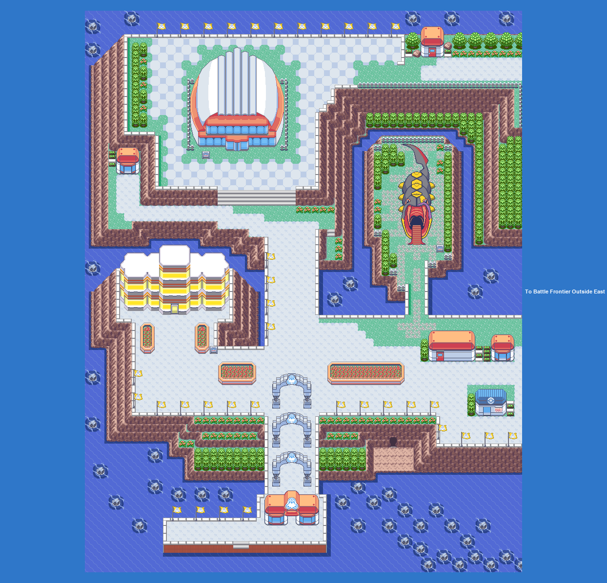
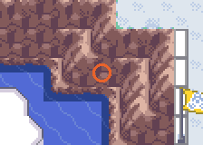

No wild Pokémon in the grass here. Time of day: M = morning (6–10), D = day (10–19), E = evening (19–20), N = night (20–6).

Event 1: The Frontier

Seven facilities, Frontier Symbols for beating each Brain. Scott meets you at the entrance. Battle Points buy tutor moves and rare items; the Mart here sells the competitive items.